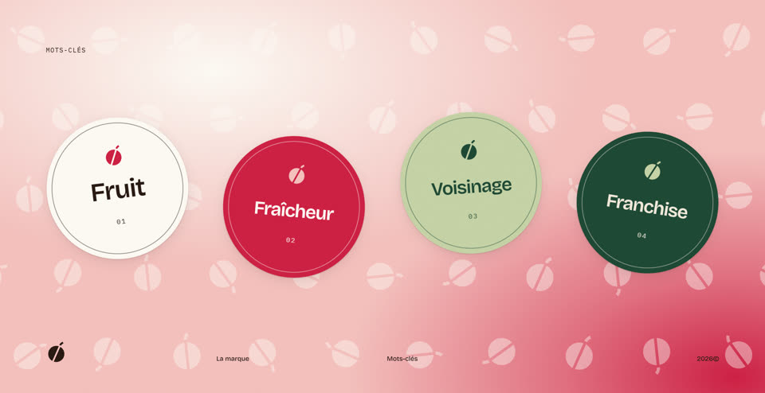
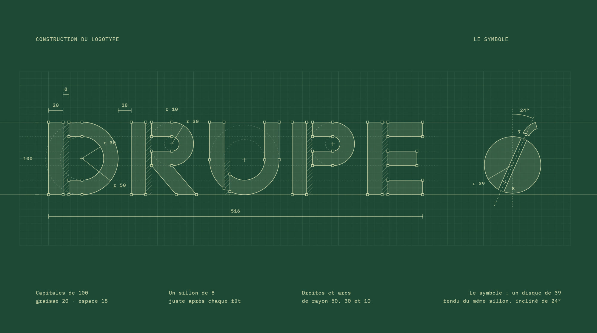

Le café est un fruit.
Torréfié au coin de la rue.
Drupe est un torréfacteur de quartier. Ce guide rassemble ce qu’il faut pour le représenter juste : son idée, son logo, ses couleurs, ses lettres, sa pastille, ses écrans et sa façon de bouger.
L’essentiel en quatre lignes
Si vous ne lisez qu’une chose avant de produire un support, lisez ceci.
Le fruit ouvert en deux, ses deux grains face à face, séparés par un sillon.
Trois quarts de clair. Une marque de jour, jamais de nuit.
Un mot, un bouton, une pastille. Pas un paragraphe.
Une date ou un chiffre plutôt qu’un adjectif.
Le guide en présentation
Le même guide, page par page, au format 16:9 : à projeter, à envoyer ou à imprimer.
Sommaire
Neuf chapitres. Chacun tient sur une page, avec ses règles, ses exemples et ses fichiers.
On achète le café comme un fruit de saison.
Drupe est un torréfacteur de quartier. Nous achetons le café comme un fruit de saison, nous le torréfions clair chaque mardi par petites fournées, et nous le livrons à vélo le jeudi. En boutique ou par abonnement, vous choisissez vos cafés ; nous écrivons sur chaque sachet d’où il vient et quand il a été torréfié.
1.1L’idée
Avant d’être un grain brun, le café est le noyau d’une cerise rouge : la drupe du caféier. Drupe la traite comme un fruit : cueillie mûre, torréfiée clair, vendue fraîche. Tout le système visuel vient de là : le fruit ouvert en deux, ses deux grains face à face, séparés par un sillon.
Ouvertures, couvertures, fin d’une vidéo.
Torréfié clair.
Servi frais.
Affiches, ardoise, publications.
de quartier
Sur deux lignes, à droite du logotype.
Du tambour à votre boîte aux lettres. Un seul chiffre à la fois.
1.2Mots-clés
Quatre mots, dans l’ordre de la vie d’un café : un fruit qu’on cueille, une fraîcheur qu’on date, un quartier qu’on livre, une franchise qu’on écrit.

1.3Valeurs
Ce que nous faisons chaque semaine, plutôt que ce que nous promettons.
1.4Personnalité
Drupe parle comme le torréfacteur qui vous connaît : chaleureux sans familiarité, précis sans jargon, fier de son métier sans le dire.
1.5Ton de voix
Vouvoiement chaleureux, phrases courtes, des faits et des dates plutôt que des adjectifs. Le « on » de l’artisan.
Quatre règles
| On dit | On évite |
|---|
Cinq lettres fendues, comme un grain.
Le logotype s’écrit « DRUPE », en capitales. Chaque lettre est fendue d’un sillon juste après son fût : c’est le sillon du grain de café, et le pont d’un pochoir. Aucune contre-forme fermée : le logo tient en un seul aplat et se découpe pour de vrai.
2.1Les trois versions
La version complète est la version par défaut. Le logotype seul sert quand le contexte dit déjà ce qu’est Drupe (un sachet, une enseigne). Le symbole, la drupe coupée, sert en petit et en rond : icône, pastille, enseigne drapeau, pied de page.
2.2Construction
Des droites et des arcs de cercle, sur une hauteur de 100. On ne redessine jamais le logo : on utilise les fichiers fournis.

Capitales, sans ascendante ni descendante.
Fûts, barres et arcs, partout la même.
Juste après chaque fût, sur toute la hauteur de la lettre.
Panses du D, du R et du P ; le U suit les mêmes cercles.
Entre deux lettres. Le logotype mesure 516 × 100.
Un disque fendu du même sillon de 8, incliné de 24°, et sa queue de graisse 9.
2.3Zone de protection
Autour du logo, on laisse libre une marge égale à deux graisses de fût (40 dans le repère du logo, soit 40 % de la hauteur des lettres). Aucun texte, aucune image, aucun bord de format n’y entre. Pour le symbole seul, la marge vaut un quart de son diamètre.
2.4Tailles minimales
En dessous de ces largeurs, le sillon se ferme ou le descripteur devient illisible. On passe alors à la version plus simple : de la version complète au logotype, du logotype au symbole.
| Version | Écran | Imprimé | Aperçu à la taille minimale |
|---|
2.5Couleurs du logo
Le logo est toujours d’une seule couleur, choisie dans ces six accords. La Cerise ne se pose jamais sur la Feuille ni sur le Grain, et jamais en petit sur la Pulpe ou le Café vert.
2.6À ne pas faire
2.7Animation
Le logo ne tombe pas et ne rebondit pas : il mûrit. Les lettres arrivent pleines, en Café vert, prennent la couleur de la Cerise l’une après l’autre, puis le sillon les fend ; le descripteur se pose en dernier.
Du vert au rouge, comme un fruit qui mûrit.
Huit couleurs prises sur le caféier : sa fleur, la peau du grain, la chair et la peau du fruit, le grain vert, la feuille, le grain torréfié et le marc. Cliquez sur une couleur pour copier son code.
3.1Palette
Le texte s’écrit en Grain. Le Marc est réservé aux scènes 3D et aux vidéos : il n’apparaît ni dans un document, ni dans l’application.
3.2Proportions
Une marque de jour : trois quarts de clair, un peu de Pulpe ou de Café vert, la Cerise par touches. La Feuille et le Grain servent de contrepoint, jamais de fond dominant d’une série.
Documents, interface, emballages
Fond Parche ou Fleur, texte Grain. La Cerise pour un mot, un bouton, une pastille. Une seule touche de Cerise par écran.
Couvertures, affiches, ardoise
Un aplat Cerise ou le dégradé .g-vif est permis en couverture. Une composition dense (Feuille) au plus sur six dans une série.
3.3Contrastes
Rapports calculés selon les WCAG 2.1 : 4,5 pour le texte courant, 3 pour les titres (24 px et plus, ou 19 px en gras). La Cerise sur Parche passe de justesse : on ne l’emploie pas en texte sous 16 px.
| Aperçu | Texte | Fond | Rapport | Usage |
|---|
3.4Dégradés
Toujours dans l’ordre du mûrissement : Feuille, Café vert, Parche, Pulpe, Cerise. Aucune autre teinte, et jamais la Cerise fondue directement dans la Feuille (cela donne du brun). De .g1 à .g6, les dégradés sont clairs et portent un texte Grain ou Feuille ; .g7 à .g9 et .g-vif sont denses et portent un texte Fleur. Sur une grande surface, on ajoute le grain de papier. Cliquez pour copier le CSS.
Une grotesque d’atelier, des étiquettes à la machine.
Bricolage Grotesque porte toute la marque : ses formes un peu irrégulières ont la main de l’artisan. IBM Plex Mono écrit les étiquettes, comme un tampon dateur : origines, altitudes, procédés, dates et prix.
4.1Bricolage Grotesque
Quatre graisses : Medium 500 pour les titres, Regular 400 pour le texte, SemiBold 600 pour les noms de café, Light 300 pour les très grands chiffres. Le mot ci-dessous est modifiable.
4.2IBM Plex Mono
En 400 ou 500, toujours en capitales un peu espacées (+8 %). Pour les origines, altitudes, procédés, dates, prix au kilo et codes. Jamais pour une phrase.
4.3Hiérarchie
| Style | Exemple | Réglage |
|---|
4.4Règles
Si Bricolage Grotesque n’est pas disponible (courriel, document partagé), on prend la police sans empattement du système ; IBM Plex Mono se remplace par la police à chasse fixe du système.
Un semis de fruits, une pastille par café.
Trois éléments suffisent à reconnaître Drupe sans son logo : le semis, comme un papier d’emballage de fruits ; la pastille, l’étiquette ronde de chaque café ; le symbole en grand, qui entre par un bord.
5.1Le semis
Des drupes en quinconce, chacune tournée d’un angle fixe. Il se balance doucement, comme des fruits sur la branche. Choisissez une version.
5.2La pastille
L’étiquette ronde de chaque café, comme celle qu’on colle sur un fruit. Un ton par café, toujours posée un peu de travers. Elle scelle les sachets, signe les gobelets et sert de vignette dans l’application.
Angle entre −8° et 12°. Jamais déformée, jamais sous 56 px à l’écran ni sous 30 mm imprimée. Un café garde son ton partout, de la carte au sachet.
5.3Le symbole en grand
Le symbole peut entrer par un bord, en très grand : au moins 1,2 fois la hauteur du cadre, coupé par deux bords, la queue visible. En Cerise sur Pulpe ou sur Parche, en Pulpe sur Cerise. Un seul par composition.
5.4Le tampon
La date de torréfaction, en IBM Plex Mono Cerise dans un cadre fin, penchée de −3°. On le trouve sur les sachets et dans la fiche d’un café, nulle part ailleurs.
5.5Le grain de papier
Un grain fin, en multiplication, recouvre les grandes surfaces de dégradé. Il casse les bandes de couleur à l’écran et rappelle le papier d’emballage à l’impression.
Sans grain
Avec grain
Une petite application qui parle comme la boutique.
L’application sert à composer sa boîte et à régler son rythme. Elle a les couleurs du papier, une seule action en Cerise par écran, et les pastilles pour vignettes.
6.1Principes
Une action par écran
Un seul bouton Cerise : modifier sa boîte, ajouter un café. Le reste est en Grain sur Fleur.
Des dates, pas des états
« Torréfié mar. 17 nov. », « Livré à vélo jeu. 19 nov. » plutôt qu’« En préparation ».
La pastille comme repère
Chaque café garde sa pastille et son ton, de la carte au sachet. On la reconnaît avant de lire son nom.
6.2Écrans
6.3Composants
6.4Icône d’application
Le symbole Fleur sur un aplat Cerise, la queue en haut. Quatre variantes de ton existent pour les fonds où la Cerise ne passe pas.

Ça mûrit, puis ça s’ouvre.
La couleur arrive d’abord, du Café vert à la Cerise ; puis les deux moitiés s’écartent de la largeur du sillon. Les sorties sont douces : aucun rebond, aucun flash, aucune lueur.
7.1Principes
Mûrir
La couleur avant le mouvement : Café vert, Pulpe, Cerise, toujours dans cet ordre.
Ouvrir
Les deux moitiés s’écartent de la largeur du sillon, pas davantage.
Poser
Une pastille arrive en tournant de quelques degrés et s’arrête de travers.
Balancer
Le semis oscille lentement, comme des fruits sur la branche.
7.2Durées et courbes
Cliquez sur une piste pour rejouer le mouvement. Les vidéos de la marque suivent les mêmes durées.
7.3Exemples
La marque au coin de la rue.
Sachets, boîte, gobelet, devanture, affiche, papeterie, écrans : les mêmes règles partout. Cliquez sur une image pour l’agrandir, puis naviguez avec les flèches du clavier.
8.1Galerie
8.2Règles par support
Sachets et boîte
Papier blanc cassé ou kraft blanchi. Le sachet est scellé par sa pastille ; l’étiquette donne l’origine, l’altitude, le procédé et l’usage, le tampon donne la date. Logotype au pochoir sur le couvercle de la boîte.
Devanture et signalétique
Façade Parche, lettres DRUPE découpées en Cerise, enseigne drapeau ronde au symbole, vitrophanie au semis, store Café vert. Jamais de lettres lumineuses ni de néon.
Papeterie
Carte de visite : recto Cerise avec la version complète en Fleur, verso Fleur. Carte de fidélité à tamponner : une drupe par café. Sac en kraft au pochoir.
Affichage et ardoise
Le triptyque en grand, un seul chiffre à la fois (48 h), le symbole qui entre par un bord. Fond Pulpe, Parche ou Feuille.
Réseaux sociaux
Trois gabarits : le triptyque sur Cerise, une pastille en gros plan, « Torréfié mardi. » sur Parche. Avatar : le symbole Fleur sur Cerise.
Scènes 3D et vidéo
Toujours de jour : soleil du matin rasant, ombres longues et nettes, ombres de feuilles sur un mur clair. Papier, bois clair, grès, émail. Pas de nuit, pas de sol noir brillant.
Les fichiers.
Tout ce qu’il faut pour produire aux couleurs de Drupe sans rien redessiner.
9.1Guide en PDF
Le guide de marque complet, page par page, au format 16:9. Les pages du PDF sont des images : le rendu est celui de l’écran, le texte ne se sélectionne pas.
9.2Logos
Fichiers vectoriels SVG, en quatre couleurs. Le descripteur de la version complète est vectorisé : aucune police à installer.
Tout télécharger (ZIP)| Version | Cerise | Grain | Fleur | Feuille |
|---|
9.3Couleurs en CSS
9.4Polices
Bricolage Grotesque
Police variable, licence libre OFL. Graisses utilisées : 300, 400, 500, 600.
9.5Coordonnées
Les mêmes coordonnées sur tous les supports. Elles sont fictives : le numéro de téléphone appartient à une plage réservée aux œuvres de fiction, l’adresse n’a ni numéro ni ville.
9.6Crédits
Drupe est une marque fictive, créée comme projet vitrine. Le nom et le domaine n’ont fait l’objet d’aucune vérification (dépôt de marque, disponibilité). Direction artistique, identité de marque et motion design : KLYRA, 2026. Polices : Bricolage Grotesque et IBM Plex Mono (licence OFL). Matières et ciels des scènes 3D : Poly Haven (CC0).